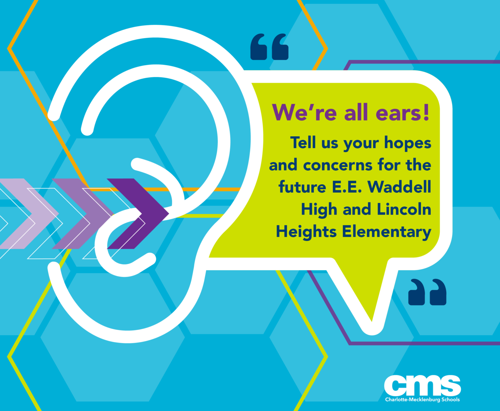
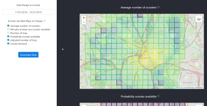
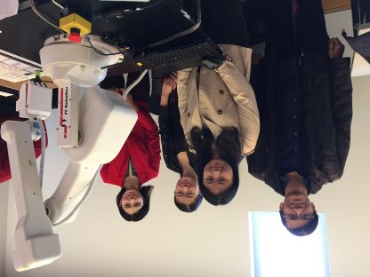

Future CMS Schools
I collaborated with an amazing team of people from CCC and
Charlotte-Mecklenburg Schools (CMS)
to create a new form of community engagement around two magnet schools opening in the fall of
2023. Through facilitated small-group conversations and various online platforms that we designed,
we were able to more deeply engage CMS’ parents, students, and other community members in dialogue
around their hopes and concerns for the new schools.
We are currently writing up this project for publication!
Facilimate
I applied user-centered design methods to create a digital support tool for
people who facilitate small-group conversations. Using Facilimate, facilitators
at any skill level can more easily manage time and follow conversation guides.
This is an ongoing project!

Shared Mobility Visual Analytics Tool
I created a visual analytics tool that can help city planners
manage their shared mobility services. The tool is a React web
application that analyzes scooter-share event data, estimates
spatial demand, and generates an interactive data visualization
page where users can map out usage and demand.
How to Not Get Rich: An Empirical Study of Donations in Open Source
Open source is ubiquitous and forms the digital infrastructure of our
society, yet sustaining open source has become increasingly difficult due
to growing demands and developer burnout. Donations are gaining in popularity
as a potential method of sustaining open source. This research project is
the first large-scale study to investigate the prevalence and impact of
donations on open source.
The Relationship between Public Transit and Bikeshare Ridership
In this data science project, I explored the causal relationship between bikeshare
and public transit networks in Boston, Philadelphia, and Washington DC using doubly
robust estimators. I applied the economic concept of complements and substitutes to
analyze how bikesharing could be used to support or supplant the first-mile/last-mile problem.
TASBE Flow Analytics
TASBE is a user-friendly and open-source environment that visually
represents and analyzes flow cytometry data. In addition to feature
development, I worked closely with biologists to design a customizable
Excel interface that enables biologists without programming skills
to set up analysis workflows in TASBE.

Interactive Robotics Research
I collaborated with three other students to analyze robot vision data
using python OpenCV to program a robotic arm to autonomously play the
card game SET (project 1) and to replicate user-built cube structures (project 2).
Computational Microbiology Research
I worked on several computational microbiology research projects with the goal
of generating unified theories of microbial community function that impact all
aspects of our lives, ranging from the environment to human health. I applied
my programming and data science knowledge to analyze metagenomics data to
understand nutrient cycling, apply network analysis to examine the effects
of perturbation on microbial communities, and write software that mines
genome databases.